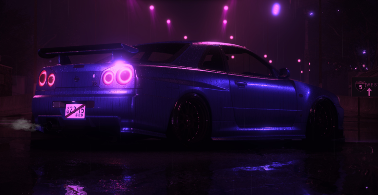

História do R34
No final da década de 1990, quando o mundo automotivo começava a migrar para uma eletrônica mais refinada e motores cada vez mais controlados por softwares, o Japão apresentou uma máquina que se tornaria lenda: o Nissan Skyline GT-R R34. Lançado em 1999, ele não era apenas mais um esportivo — era a culminação de décadas de engenharia obsessiva da Nissan no universo do desempenho. Debaixo do capô estava o icônico motor RB26DETT, um seis cilindros em linha biturbo de 2.6 litros que, oficialmente, entregava 280 cavalos — número “limitado” por um acordo informal entre montadoras japonesas da época. Porém, entusiastas sabiam que o potencial real era muito maior. Com preparação adequada, o R34 facilmente ultrapassava a marca dos 500, 600 ou até 1.000 cavalos, tornando-se um dos carros mais modificáveis da história.
